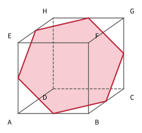
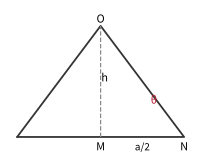
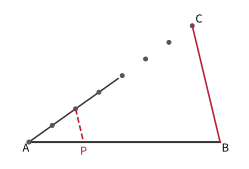

別冊章末問題の解答
1. 凸多面体で、三角形の面が8個、正方形の面が6個あり、どの頂点にも4つの面が集まっている。辺の数 \(E\) と頂点の数 \(V\) を求めよ。
（例題1の型）
【答案】
\[E=24,\ V=12\]答
2. 直方体 ABCD-EFGH で \(AB=6,\ AD=8,\ AE=24\)。対角線 AG と平面 ABCD のなす角 \(\theta\) の \(\sin\theta,\ \cos\theta,\ \tan\theta\) と、AG と AB のなす角 \(\varphi\) の \(\cos\varphi\) を求めよ。
（例題2の型）
【答案】
\[\dfrac{12}{13},\ \dfrac5{13},\ \dfrac{12}5;\ \dfrac3{13}\]答
3. 立方体 ABCD-EFGH で、AH と BE のなす角を求めよ。
（例題3の型）
【答案】
\[60^\circ\]答
4. 長さ1の線分から長さ \(\sqrt7\) の線分を作図する方法を、\(AH\)、\(HB\) の長さと \(CH^2\) の計算で示せ。
（例題4の型）
【答案】
\[AH=1,\ HB=7,\ CH^2=7\]答
5. 直方体 ABCD-EFGH で \(AB=2,\ AD=5,\ AE=7\)。A から表面を通って G に至る最短経路の長さを求めよ。
（例題5の型）
【答案】
\[7\sqrt2\]答
6. すべての面が合同な正3角形で、各頂点にちょうど 5 個の面が集まる凸多面体（正二十面体）の面・辺・頂点の数を求めよ。
辺の数と面・頂点の数
各面は \(3\) 角形。辺は2つの面に共有されるので、面の辺の数の合計は辺の数の2倍。
\[3F=2E\]各頂点には \(5\) 本の辺が集まる。辺は2つの頂点をもつので
\[5V=2E\]オイラーの多面体定理
\(V-E+F=2\) に \(F=\dfrac{2E}{3},\ V=\dfrac{2E}{5}\) を代入。
\[\dfrac{2E}{5}-E+\dfrac{2E}{3}=2\ \Rightarrow\ E=30\]面と頂点
\[F=20,\qquad V=12\]（例題6の型）
【答案】
\[F=20,\ E=30,\ V=12\]答
7. 1辺の長さが \(10\) の立方体 \(ABCD\text{-}EFGH\) を、辺 \(BC,\ CG,\ GH,\ HE,\ EA,\ AB\) の中点を通る平面で切る。切り口の面積を求めよ。
切断面の形
1辺 \(10\) の立方体を、辺の中点6つを通る平面で切る。切り口の各辺は面の対角線の半分なので、等しい長さ。

辺の長さ
\[\text{1辺}=\dfrac12\cdot10 \sqrt{2}=5 \sqrt{2}\]面積
切り口は正六角形（1辺 \(5 \sqrt{2}\)）。正三角形6個分。
\[S=6\cdot\dfrac{\sqrt3}{4}\left(5 \sqrt{2}\right)^2=75 \sqrt{3}\]（例題7の型）
【答案】
\[75 \sqrt{3}\]答
8. 底面が1辺 \(12\) の正方形で、高さが \(8\) の正四角すいがある。側面と底面のなす角を \(\theta\) とするとき、\(\tan\theta\) と \(\cos\theta\) を求めよ。
断面を考える
底面の辺の中点 \(M\) と頂点 \(O\) を通り、底面の辺に垂直な平面で切る。側面と底面のなす角 \(\theta\) は、この断面の底角。

\(\tan\theta\)
底面の中心から辺の中点までは \(\dfrac a2=6\)、高さ \(h=8\)。
\[\tan\theta=\dfrac{h}{a/2}=\dfrac{8}{6}=\dfrac{4}{3}\]斜面の高さ・余弦
\[OM'=\sqrt{h^2+(a/2)^2}=10,\qquad \cos\theta=\dfrac{a/2}{OM'}=\dfrac{3}{5}\]（例題8の型）
【答案】
\[\tan\theta=\dfrac{4}{3},\ \cos\theta=\dfrac{3}{5}\]答
9. 1辺の長さが \(4\) の正四面体 \(ABCD\) で、辺 \(BD\) の中点を \(M\)、辺 \(AC\) の中点を \(N\) とする。直線 \(AM\) と直線 \(BN\) のなす角を \(\theta\ (0^\circ<\theta\leqq90^\circ)\) とするとき、\(\cos\theta\) を求めよ。
辺の中点
\(M\) は辺 \(BD\) の中点、\(N\) は辺 \(AC\) の中点。2直線 \(AM\)、\(BN\) はねじれの位置にある。
平行移動して三角形をつくる
どちらかを平行移動して、1つの三角形の2辺にする。中点連結定理を使って長さを求め、余弦定理を使う。1辺 \(4\)、正三角形の中線は \(\sqrt3\cdot4/2\)。
\(\cos\theta\)
\[\cos\theta=\dfrac{2}{3}\]（なす角 \(0^\circ<\theta\leqq90^\circ\) なので正の値で答える）。
（例題9の型）
【答案】
\[\dfrac{2}{3}\]答
10. 線分 \(AB\) を \(2:5\) に内分する点 \(P\) の作図の手順を述べ、その作図が正しい理由を説明せよ。
補助線
\(A\) から別の半直線を引き、等間隔に \(7\) 個の点をとる（\(A\to C\)）。

平行線を引く
\(C\) と \(B\) を結び、\(A\) から数えて \(2\) 番目の点を通って \(CB\) に平行な直線を引く。
理由
平行線と線分の比の定理より \(AP:PB=2:5\)。
\[AP:PB=2:5\]（例題10の型）
【答案】
\[\text{平行線と比の定理より }AP:PB=2:5\]答